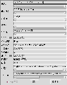

データ修正ダイアログについて

変更項目を入力して登録ボタンを押します。管理者以外は、社有図書の保管部 所、注記の項目だけを修正できます。
自分の手元にある社有図書の保管部所と保管者（注記）を確認し、違って いたら修正しましょう。
一般図書の修正、削除はデータの登録者だけが 行なえます。
登録データフォーマットについては、データ登録と同じなの で、
こちら
を御覧下さい。
[インデックスへ戻る]